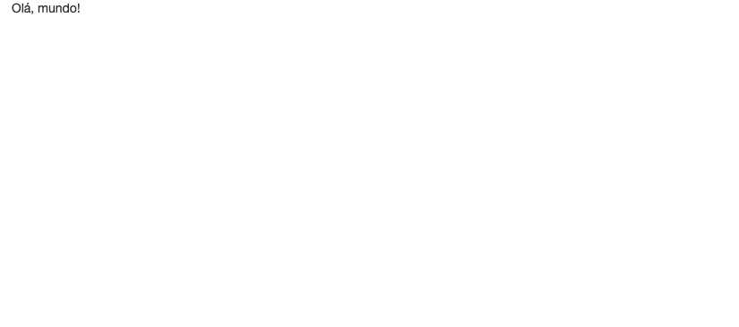

1 Seu primeiro aplicativo Shiny
Neste capítulo, vamos discutir o que é um aplicativo Shiny e o como ele funciona. Também vamos construir e rodar o nosso primeiro app, apresentando quais são os seus componentes básicos.
Antes de começarmos, você precisa ter o pacote shiny instalado.
install.packages("shiny")A versão do pacote que estamos utilizando neste livro é a 1.7.2.
É uma boa prática criarmos novos repositórios (ou projetos, no RStudio) para cada nova análise de dados que começamos, mantendo todos os arquivos da análise dentro desse repositório. Veremos que, para aplicativos Shiny, isso será especialmente importante. Para reproduzir os exemplos deste livro, recomendamos criar uma nova pasta para cada aplicativo. Por mais que em alguns casos isso não seja particularmente útil, será uma boa maneira de praticar essa maneira de organização.
Para mais dicas de organização de projetos de análise de dados, em um contexto geral, recomendamos a leitura do Zen do R, especialmente o Capítulo 3.
1.1 O que é um aplicativo Shiny?
Na tentativa de explicar o que é um aplicativo Shiny, podemos reduzi-lo a diversos elementos.
Um aplicativo Shiny é um site, uma página na web. Ele terá um endereço (URL) que, quando acessado, exibirá informações em forma de texto e imagens1. Ser uma página web também significa que ele será constituído de HTML, CSS e JavaScript. Se você não conhece essas linguagens, uma boa maneira de entender o papel de cada uma delas no desenvolvimento de um site é pensar na construção de um prédio.
Podemos pensar o HTML como a estrutura física do prédio: chão, paredes, colunas, teto, encanamento, fiação etc; o CSS é o responsável pela aparência: pintura, pisos, azulejos, decoração em geral; e o JavaScript traz elementos de funcionalidade ao prédio: portas, janelas, interruptores, elevadores etc.

Com o Shiny, construiremos esse prédio utilizando funções de R.
Um aplicativo Shiny também é uma aplicação web. Isso significa que, além de exibir informações, o nosso site/aplicativo também permitirá que a gente interaja com ele enviando dados que serão processados para criar novas informações. Essa interação gera um componente fundamental de um Shiny app: o servidor. Todo aplicativo Shiny será hospedado em um servidor com uma sessão de R rodando.
Por fim, um aplicativo Shiny também é um código (ou uma coleção de códigos) em linguagem R. O pacote shiny, ao lado de muitos outros pacotes criados pela RStudio e pela comunidade, possui funções que (1) criam a estrutura e o visual do site/aplicativo, (2) montam a lógica de comunicação entre a pessoa que está utilizando o app e o servidor e (3) permite a construção da lógica interna do aplicativo, onde criamos as visualizações que serão exibidas na página a partir de código R puro. Esse último item significa que podemos utilizar todo arsenal de manipulação, visualização e modelagem do R em nossos aplicativos Shiny!
Além dessas definições, ainda há diversos pontos sobre implantação e hospedagem dos aplicativos para completar a discussão sobre o framework Shiny. Esses tópicos serão tratados mais a frente neste livro, no Capítulo 9.
Na próxima seção, apresentaremos os componentes básicos de um aplicativo Shiny, tanto conceitualmente quanto no código.
1.2 Os componentes básicos
Um aplicativo Shiny tem dois componentes básicos: a interface de usuário e o servidor.
O primeiro componente se refere à(s) tela(s) do aplicativo, àquilo que veremos quando estivermos usando o app. Já o segundo componente se refere ao que não veremos: a lógica interna do app.
Desenvolver a interface de usuário ou UI (sigla para o termo user interface, em inglês) significa construir o código HTML que compõe o app. Retomando a analogia do prédio, você precisa determinar explicitamente quais são e onde ficam as paredes do seu aplicativo. Isso é feito a partir de funções do pacote Shiny que geram HTML.
A princípio, você não precisará se preocupar com CSS, pois a aparência padrão do Shiny2 é bem razoável. O mesmo vale para o JavaScript: quando você programa em Shiny, todo o JavaScript necessário para o seu app funcionar corretamente já está pronto e será utilizado automaticamente.
A figura a seguir mostra a UI de um app bem simples, que permite a escolha de duas variáveis e apresenta o gráfico de dispersão delas:

O lado do servidor (server side ou simplesmente server, em inglês) contém toda a lógica para a construção das visualizações apresentadas na UI. No exemplo da figura anterior, o código que gera o gráfico de dispersão fica dentro do servidor.
Embora precisemos aprender alguns conceitos e regras novas, a maior parte do código que compõe o servidor é aquele bom e velho R que já utilizamos no dia-a-dia para gerar tabelas, gráficos e qualquer outro tipo de visualização. Em resumo, para fazer um ggplot aparecer no Shiny, basta adaptar o código que gera esse gráfico para receber as informações que vêm da UI (inputs) e devolver o resultado (output) de maneira adequada.
A UI e o servidor são os dois elementos básicos de um aplicativo Shiny. Embora sejam construídos separadamente, um depende do outro e a correta conexão desses componentes é o que gera a interatividade do app. Teremos sempre requisições sendo feitas pela UI, processadas pelo servidor e seus resultados devolvidos à UI. Esse processo está resumido no esquema a seguir:

Você pode acessar o app utilizado como exemplo nesta seção clicando aqui. Dado o esquema apresentado na figura anterior, tente imaginar o que está acontecendo sempre que você seleciona uma nova variável dentro do app. Como o novo gráfico é gerado? Qual é o papel do servidor? Como ele se comunica com a UI que você está vendo?
Na próxima seção, vamos começar a responder essas perguntas mostrando como construímos a UI e o servidor de um Shiny app utilizando o pacote shiny.
1.3 Estrutura de um código Shiny
Na seção anterior, falamos que a construção da UI corresponde à construção do código HTML que compõe o aplicativo. Fazemos isso utilizando funções do R que retornam HTML. Esse é um dos papéis do pacote shiny e um dos desafios da programação em Shiny. Não precisaremos aprender HTML formalmente, mas precisaremos aprender quais funções utilizar para construir uma UI bem estruturada.
Também falamos que o servidor é responsável por receber os códigos que geram as visualizações apresentadas na UI, conectando os inputs e outputs do aplicativo. No código, isso sempre será feito dentro de uma função chamada server.
Com isso em mente, o código de qualquer aplicativo Shiny terá a estrutura abaixo:
um objeto chamado
ui;uma função chamada
server;e uma chamada da função
shinyApp().
Como exemplo, observe o código a seguir. Ele representa um dos aplicativos mais simples que podemos construir:
library(shiny)
ui <- fluidPage("Olá, mundo!")
server <- function(input, output, session) {
}
shinyApp(ui, server)Esse código resultará no aplicativo com a seguinte UI:

Vejam que a UI se trata apenas de uma página de fundo branco com a frase “Olá, mundo!” escrita no canto superior esquerdo. O app não possui nenhuma interatividade.
Olhando o código anterior, encontramos a frase “Olá, mundo!” na definição do objeto ui, dentro da função fluidPage(). Essa função do pacote shiny é uma entre várias que utilizaremos para retornar código HTML e precisamos utilizá-la para que o HTML do aplicativo funcione corretamente. Falaremos mais sobre ela no Capítulo 5.
ui <- fluidPage("Olá, mundo!")O importante por enquanto é sabermos que o objeto ui é responsável por receber todo o código HTML do nosso aplicativo.
A função server sempre receberá os argumentos input, output e session. A partir desses argumentos, montaremos a lógica interna (ou reativa, guarde esse nome) do app. O código que gera as visualizações será escrito dentro dessa função. Como o nosso app Olá, mundo! não possui visualizações ou interatividade, a sua função server está vazia3.
server <- function(input, output, session) {
# O código do server seria colocado aqui.
}A última linha de código do nosso pequeno app contém a chamada shinyApp(ui, server). Essa função vai juntar o objeto ui e a função server, construir toda a arquitetura necessária e rodar o aplicativo. Não discutiremos aqui como tudo isso é feito pois envolve tópicos fora do escopo de um material introdutório. Por enquanto, é importante lembrar que essa função sempre deve ser chamada ao fim do código de um Shiny app.
Na próxima seção, vamos discutir como rodar localmente um aplicativo Shiny e o que acontece no nosso computador quando estamos fazendo isso.
1.4 Rodando um aplicativo
Para fazer o seu primeiro aplicativo em Shiny, abra o RStudio e copie o código do app Olá, mundo! (apresentado novamente a seguir) em um arquivo chamado app.R. Recomendamos fortemente que vocês utilizem projetos e que, neste primeiro momento, sempre salvem o script dos aplicativos na raiz do projeto.
library(shiny)
ui <- fluidPage("Olá, mundo!")
server <- function(input, output, session) {
}
shinyApp(ui, server)Repare que algumas opções novas aparecerão no RStudio quando salvamos o arquivo. Isso acontece porque o RStudio reconhece a sintaxe do código como a de um aplicativo Shiny, habilitando para nós algumas ferramentas que são úteis apenas para trabalhar com apps. A mais importante por enquanto será o botão Run App.
Como discutimos anteriormente, um aplicativo Shiny em funcionamento sempre terá um computador rodando uma sessão de R por trás. Esse computador, chamado genericamente de servidor, pode ser uma máquina virtual em um serviço de nuvem, uma máquina virtual em um serviço de hospedagem, um servidor dentro da sua empresa, um servidor na sua casa ou mesmo o seu próprio computador pessoal.
Normalmente, enquanto estamos desenvolvendo um aplicativo Shiny, queremos testá-lo localmente4 para verificar se tudo funciona corretamente, se está ficando bonito ou simplesmente para gastar alguns minutos apreciando a nossa obra de arte. Testar localmente significa que o seu próprio computador fará as vezes de servidor, embora isso não signifique que seu app ficará disponível na internet.
Quando servimos um app localmente, isto é, quando rodamos um app, ganhamos um endereço que será acessível apenas do nosso computador. A partir desse endereço, podemos testar nosso app no navegador, como se ele já estivesse em produção. No RStudio, para rodar nossos apps, utilizamos justamente o botão Run App.

Ao clicar nesse botão, o seu navegador padrão será aberto5 e você verá a UI do nosso modesto app com apenas a frase “Olá, mundo!”.
Se você voltar ao RStudio, eventualmente vai notar algo muito importante: a sua sessão de R estará ocupada! Mas isso não deveria ser uma surpresa, pois já discutimos que todo Shiny app tem uma sessão de R rodando por trás.
Essa sessão fornece a comunicação da UI (ou do nosso navegador) com o servidor e é responsável por atualizar as visualizações apresentadas na UI, sempre que alguém interagir com o app. Embora o nosso app Olá, mundo não possuir interatividade, a estrutura necessária para que a interatividade aconteça ainda assim é criada pelo Shiny.
Para liberar a sessão, basta clicar no botão “stop”, na parte de cima do Console, ou pressionar a tecla Esc. Veja que, ao fazer isso, a tela do app ficará cinza, indicando que ele foi desconectado do servidor e não funcionará mais corretamente.

No console, após rodarmos o app, também aparecerá uma mensagem identificando o endereço do nosso aplicativo. Nesse caso, será um IP (http://127.0.0.1)6 com alguma porta que esteja disponível escolhida aleatoriamente (:4028). Esse endereço aparecerá no nosso navegador e poderemos copiá-lo e colá-lo em qualquer outra aba ou navegador que quisermos rodar o app.
1.5 Exercícios
1 - O que é um aplicativo web?
2 - Quais são os componentes básicos de um aplicativo Shiny?
3 - Por que a sessão do R fica ocupada quando rodamos um app localmente?
4 - Sobre o código de um aplicativo Shiny, escolha a alternativa falsa.
As funções do R utilizadas na construção da UI são funções que retornam código HMTL.
Não precisamos criar a função
serverse o app não tiver interatividade.A função
serverpode ser escrita sem o parâmetrosession.Embora seja uma boa prática usar os nomes
uieserver, podemos adotar qualquer nome para esses elementos.
5 - Por que o app criado pelo código abaixo retorna erro quando o rodamos?
library(shiny)
ui <- fluidPage(
)
server <- function() {
}
shinyApp(ui, server)Embora seja incomum, você também pode mostrar vídeos em um Shiny app.↩︎
Isto é, o código CSS que o Shiny importa por padrão.↩︎
A função
serversempre precisa existir, mesmo neste caso, quando não há interatividade↩︎E loucamente também.↩︎
Se o app foi aberto na aba Viewer ou em uma janela do próprio RStudio, clique na seta para baixo ao lado do botão Run App e selecione a opção
Run External.↩︎Esse número de IP é padrão e significa “o seu computador”.↩︎